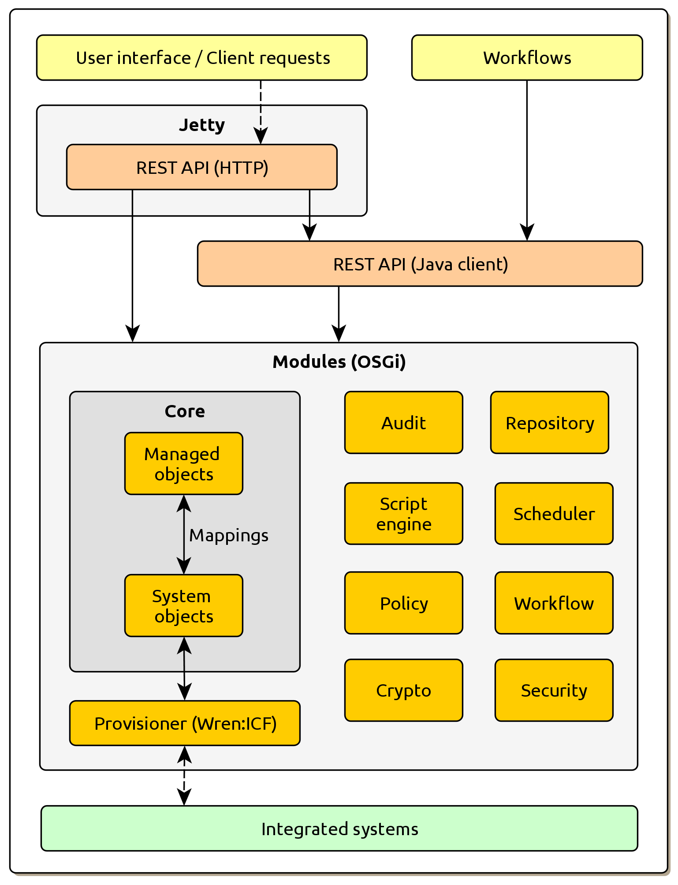

Overview
The main strength of Wren:IDM is straightforwardness of its core concepts, which is also a cornerstone of its outstanding flexibility. It provides a JSON-based object model, where objects are treated uniformly using APIs. These objects include
-
managed objects – maintained in IDM’s repository,
-
system objects – representing external resources such as accounts,
-
configuration objects – representing various aspects of IDM configuration,
-
workflow objects – representing workflows, and many more.
Working with these objects is pretty straightforward as well. E.g. when you patch a managed object like a user, it is updated in the repository and configured actions take place. When you patch a system object like an account, it is updated in the integrated system. Audit trails will appear in the system in both cases.
The main system components are shown in following figure:

While the depicted components are quite familiar, Wren:IDM takes a novel approach by providing access to all of them through a unified Resource API. The API is the same whether objects are being accessed through REST from outside the system, or internally from scripts and other parts of the IDM system itself. Please compare the following two examples.
// JavaScript Resource API within IDM
var users = openidm.query("managed/user", { "_queryFilter" : '/givenName eq "Peggy"' });$ # REST API accessed from outside. Never use plain HTTP over network.
$ # Also consider mutual certificate authentication for similar use cases.
$ curl -u openidm-admin:openidm-admin \
'http://localhost:8080/openidm/managed/user?_queryFilter=givenName+eq+"Peggy"'As already said, the components are familiar from most IDM platforms:
-
Audit – component for auditing of all triggered events and states
-
Repository – persistence layer for storing all managed objects
-
Script engine – component for scripts execution (JavaScript or Groovy)
-
Scheduler – component for executing scheduled jobs
-
Policy – component for executing validations during object modifications
-
Workflow – embedded workflow engine based on Activiti
-
Crypto – component for data encryption
-
Security – component for handling REST API security
-
Managed objects – IDM managed objects like users, roles or any objects the organization uses
-
System objects – integrated system objects
-
Provisioner – abstract layer for integrating external systems
-
Custom endpoints (not shown in the diagram) – REST API endpoints defined by the implementers to provide their own business logic